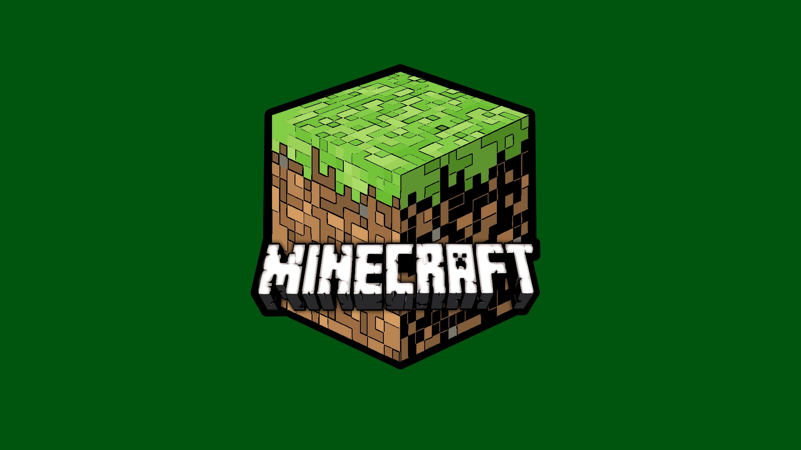

Mine craft Club 2.0
Ici c'est la page secrete...retour a la page initiale.
Minecraft Club
Le club minecraft comprend plusieurs membres.

membres du club
- Createur du mod: Ivan
- Createur du groupe: Jesaiah
Groupe 1: Warden
- Ivan
- Jesaiah
- Stan
- Charles
- Louis
- Marlon
Groupe 2: Pinglin
- Loic
- Fabien
- Willy
- Quentin
- Esteban
- Elliel
Activites Secretes Reservees aux membres exclusifs du club
https://percojazz.github.io/minecraft/secret.html
Serveur
Comment joindre le serveur.
Tresorerie
Ici on met notre argent en commun pour realiser des achats.
Par exemple nous pensons acheter un nouveau serveur pour jouer ensemble.